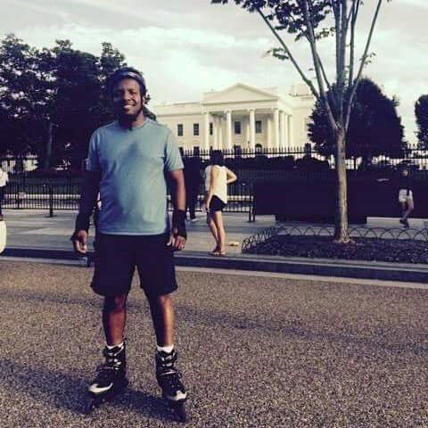
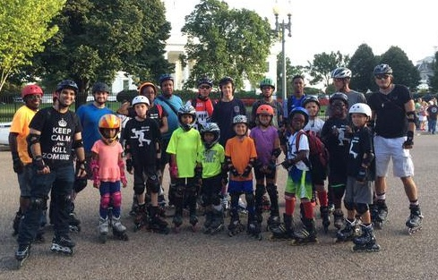

Inline skating in Washington, DC |
||
|  |  | |
I was in Washington, DC, for a business trip. During one of the free evenings, I connected with the Washington Area Roadskaters - Skate DC for the #skateOfTheUnion. A few dozen inline skaters toured the major DC monuments on wheels! It was my first time that I socialized with a group of skaters. DC: check! |
||